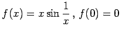

Inhalt Index DeskTop Bronstein

 Differentialrechnung Differentiation von Funktionen einer Veränderlichen Differentialquotient
Differentialrechnung Differentiation von Funktionen einer Veränderlichen Differentialquotient


Die Existenz der Ableitung einer Funktion f(x) für die Werte der Variablen x ist gegeben, wenn für diese Werte der Differentialquotient f'(x) (6.1) einen endlichen Wert besitzt.
Existiert in einem Punkt x keine Ableitung, dann hat die Kurve in dem betreffenden Punkt entweder keine bestimmte Tangente oder diese bildet mit der x-Achse einen rechten Winkel. Im zweiten Falle ist der Grenzwert f'(x) (6.1) unendlich. Man schreibt für diesen Sachverhalt bzw.  .
.
| Beispiel A |
|
. Im Punkt 0 geht die Ableitung gegen unendlich (linke Abbildung), d.h., sie existiert nicht. |

| Beispiel B |
|
: An der Stelle x=0 existiert kein Grenzwert der Art (6.1) (rechte Abbildung). |